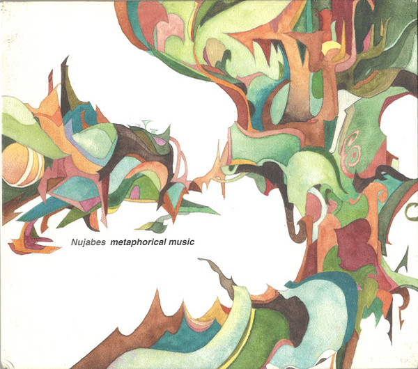
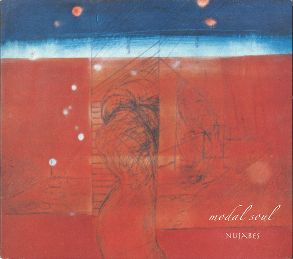
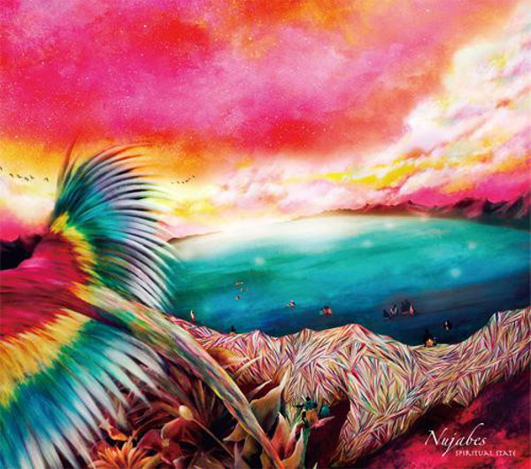

Discography

Metaphorical Music (2003)
Tracklist
- "Blessing It (Remix)" (featuring Substantial & Pase Rock)
- "Horn in the Middle"
- "Lady Brown" (featuring Cise Starr)
- "Kumomi"
- "Highs 2 Lows" (featuring Cise Starr)
- "Beat Laments the World"
- "Letter from Yokosuka"
- "Think Different" (featuring Substantial)
- "A Day by Atmosphere Supreme"
- "Next View" (featuring Uyama Hiroto)
- "Latitude (Remix)" (featuring Five Deez)
- "F.I.L.O." (featuring Shing02)
- "Summer Gypsy"
- "The Final View"
- "Peaceland"

Modal Soul (2005)
Tracklist
- "Feather" (featuring Cise Starr & Akin)
- "Ordinary Joe" (featuring Terry Caller)
- "Reflection Eternal"
- "Luv (Sic.) Part 3" (featuring Shing02)
- "Music Is Mine"
- "Eclipse" (featuring Substantial)
- "The Sign" (featuring Pase Rock)
- "Thank You" (featuring Apani B)
- "World's End Rhapsody"
- "Modal Soul" (featuring Uyama Hiroto)
- "Flowers"
- "Sea of Cloud"
- "Light on the Land"
- "Horizon"

Spiritual State (2011)
Tracklist
- "Spiritual State" (featuring Uyama Hiroto)
- "Sky Is Tumbling" (featuring Cise Starr)
- "Gone Are the Days" (featuring Uyama Hiroto)
- "Spiral"
- "City Lights" (featuring Pase Rock and Substantial)
- "Color of Autumn"
- "Dawn On the Side"
- "Yes" (featuring Pase Rock)
- "Rainyway Back Home"
- "Far Fowls"
- "Fellows"
- "Waiting For the Clouds" (featuring Substantial)
- "Prayer"
- "Island" (featuring Uyama Hiroto and Haruka Nakamura)